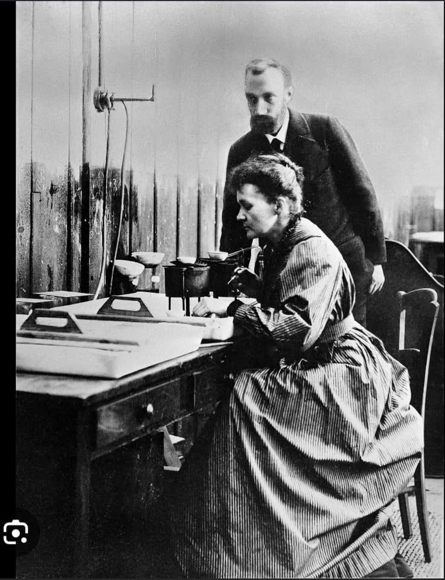

Quem foi Marie Curie?
Marie Skłodowska-Curie, nascida Maria Salomea Skłodowska (Varsóvia, 7 de novembro de 1867 — Passy, 4 de julho de 1934), foi uma física e química polonesa naturalizada francesa, que conduziu pesquisas pioneiras sobre radioatividade. Foi a primeira mulher a ganhar o Prêmio Nobel, sendo também a primeira pessoa e a única mulher a ganhá-lo duas vezes, além de ser a única pessoa a ter ganhado o Prêmio Nobel em dois campos científicos diferentes.
Vida e Estudos
Nascida em Varsóvia, no que era então o Reino da Polônia, parte do Império Russo, ela estudou na clandestina Universidade Volante de Varsóvia e iniciou seu treinamento científico prático na mesma cidade. Em 1891, aos 24 anos, seguiu sua irmã mais velha, Bronisława, para estudar em Paris, onde obteve seus diplomas superiores e conduziu seus trabalhos científicos subsequentes.


Prêmios Nobel
Ela compartilhou o Prêmio Nobel de Física de 1903 com seu marido, Pierre Curie, e com o físico Henri Becquerel. Ela também ganhou o Prêmio Nobel de Química de 1911.
Descobertas e Legado
Suas realizações incluem o desenvolvimento da teoria da radioatividade, técnicas para isolar isótopos radioativos e a descoberta de dois elementos químicos, o polônio e o rádio. Sob sua direção, foram conduzidos os primeiros estudos para o tratamento de neoplasias usando isótopos radioativos. Durante a Primeira Guerra Mundial, ela desenvolveu unidades de radiografia móvel para fornecer serviços de raio-X a hospitais de campanha.
